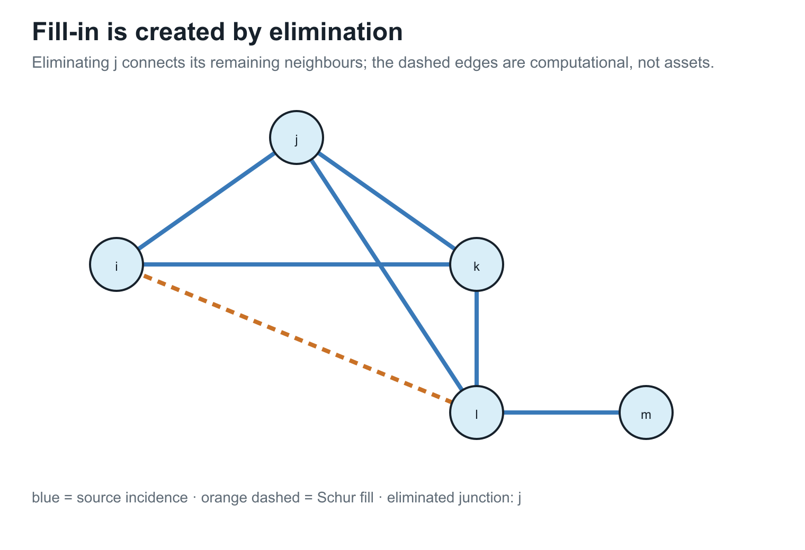
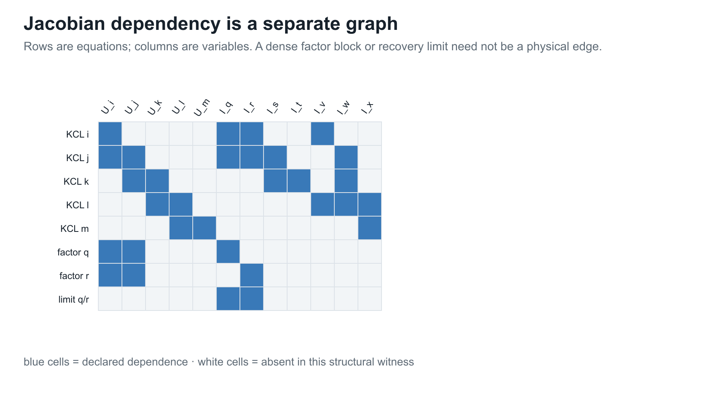
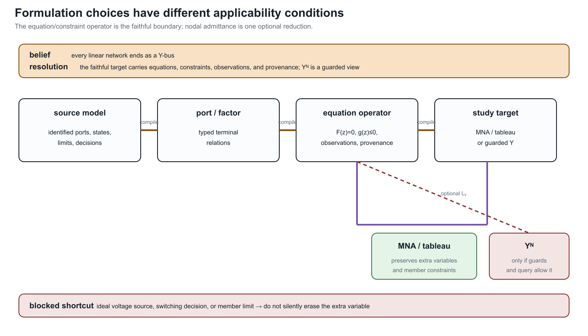

Circuit formulations and the lowering boundary
Page status: formulation guide and equivalence contract; the definitions and guards below are book conventions supported by circuit and power-system precedents. General equivalence theorems beyond the declared linear scopes remain future work.
The same power network can be compiled into several equation systems. A nodal admittance matrix is one particularly useful target, but it is not a universal representation of general power networks. A numerical $\mathbf Y$ may be available while asset identity, switch states, branch currents, grounding, multi-terminal behaviour, controls, limits, or decisions have already been discarded. Conversely, a faithful source model may require a tableau, modified nodal system, branch-current variables, or an unevaluated port–factor relation.
This chapter supplies the formulation boundary for From source graphs to views and graph surgery. The source object and its view registry remain authoritative there; this chapter owns equation targets, assembly identities, solvability guards, and formulation equivalence. Two topology levels and the nodal projection owns topology, support, projection, and nodal-operator non-identifiability. The representation maps chapter owns the cross-framework arrow vocabulary.
Formulation families
Let $\mathcal M$ be a declared power-network model with voltage, current, power, control, state, and parameter variables. A formulation is a choice of unknowns $x$, equations $F(x;u,\theta)=0$, inequalities $g(x;u,\theta)\le 0$, and an observation map $h$. The formulation is therefore more than a matrix: the variable ownership, limits, state domain, and recovery map are part of its contract.
| Formulation | Primary unknowns | Strong use | Typical loss or guard |
|---|---|---|---|
| nodal admittance | retained node voltages | fixed linear network stamping and PF linear subproblems | requires admittance-form branch relations; hides branch variables and asset identity |
| modified nodal analysis | node voltages plus selected branch currents | ideal voltage sources, current-controlled elements, switches, and mixed devices | larger saddle-point system; source provenance still has to be attached |
| sparse tableau | node, branch, port, and device variables | OPF limits, node–breaker models, multiport factors, and fixed sparsity | more variables and equations; elimination is a separate transformation |
| branch-current or branch-flow | voltages, currents, and often powers on identified members | explicit ratings, radial identities, and device-level constraints | equations depend on chosen branch model and orientation conventions |
| hybrid/port parameters | selected boundary efforts and flows | multiport composition and boundary equivalents | a representation is local to declared ports and may be singular at some frequencies or states |
| general port–factor relation | ordered typed ports and behavioural relations | nonlinear, controlled, dynamic, and multi-terminal equipment | not itself a single sparse matrix or ordinary graph |
The circuit literature distinguishes nodal analysis from modified and tableau extensions precisely because some elements do not admit a convenient admittance-only branch relation [12, 13]. Power-system work makes the same boundary operational: sparse tableau formulations retain multi-port element variables and node–breaker actions that would otherwise require changing $Y_{\mathrm{bus}}$ between states [14].
These formulations may be mathematically equivalent after elimination on a restricted domain. They are not interchangeable source models: eliminating a current variable can remove the direct place to attach a thermal limit, a switch state, or a protection relation.
Numerical footprint of the formulation choice
The choice of equation target also changes the symbolic problem seen by a solver. Schur elimination can add fill edges, while a Jacobian dependency graph records equation–variable relations rather than physical incidence. These are formulation-level effects, so they belong here beside the lowering boundary rather than only in the later executed numerical witnesses.


The figures are conceptual structural views. The pinned numerical export and nonlinear KKT witnesses remain in Numerical consequences of representation and reduction, where their fixture-specific counts, residuals, and solver limitations are recorded.
When an exact nodal admittance target exists
For a declared set $\Phi_{\mathrm{lin}}$ of fixed linear factors, choose a retained voltage vector $\mathbf U$. If each factor has an admittance-form terminal relation
\[\mathbf i_\phi=\mathbf Y_\phi\mathbf A_\phi\mathbf U\]
and its current injection maps back through $\mathbf A_\phi^{\mathsf T}$, then assembly gives
\[\mathbf Y^{\mathrm N} =\sum_{\phi\in\Phi_{\mathrm{lin}}} \mathbf A_\phi^{\mathsf T}\mathbf Y_\phi\mathbf A_\phi, \qquad \mathbf i^{\mathrm{inj}}=\mathbf Y^{\mathrm N}\mathbf U.\]
Here $\Phi_{\mathrm{lin}}$ is a formulation subset, not the entire source inventory. It contains factors whose parameters and states are fixed for the declared solve. A factor carrying an unfixed tap, switching state, control law, or other decision remains in the equation/constraint operator unless the target is explicitly rebuilt pointwise over that decision domain.
This is an assembly identity, not a claim that $\mathbf Y^{\mathrm N}$ is a canonical factorization or a complete power-network model. A useful sufficient guard for exact nodal stamping is:
- the retained variables are node-voltage coordinates sufficient for the declared observation and decision queries;
- every included factor has a well-defined linear relation in those voltage coordinates, or has already been exactly eliminated with a declared Schur complement and recovery map;
- voltage-source, current-controlled, dynamic, and algebraic-constraint variables that cannot be eliminated are retained elsewhere in the target;
- the topology and device state used for assembly are fixed, or the target is rebuilt for each declared state;
- grounding, reference, terminal maps, and coordinate order are declared; and
- every limit, control, and decision that the study queries has a surviving variable or an explicit recovery/constraint map.
Source factors versus study-specific nodal splits
The source model and the matrix used by an iterative solver are related but are not the same object. Let $\mu$ denote a study mode, $\sigma$ an active equipment state, and $k$ an operating point or iteration. A current-injection solver may use the split
\[\mathbf Y_{\mathrm{lin}}^{(\mu,\sigma,k)}\mathbf V^{k+1} =\mathbf I_{\mathrm{src}}^{(\mu,\sigma)} +\mathbf I_{\mathrm{comp}}^{(\mu,\sigma)}(\mathbf V^k).\]
The linear operator may contain passive delivery elements, fixed shunts, constant-admittance load or generator parts, or a declared Norton equivalent. The compensation term carries the remaining nonlinear or operating-point dependent current. A constant-impedance load can therefore appear in the diagonal of $\mathbf Y_{\mathrm{lin}}$ while a constant-power load at the same bus appears through $\mathbf I_{\mathrm{comp}}$. A generator may be a PV/PQ constraint, a Norton source, a dynamic equivalent, or a current-limited injection depending on the study.
This is not automatically a Newton–Raphson step. Newton's method forms a residual Jacobian for an increment $\Delta x$,
\[\mathbf J(\mathbf x^k)\Delta\mathbf x =-\mathbf F(\mathbf x^k),\]
whereas a fixed-point current-injection method can keep $\mathbf Y_{\mathrm{lin}}$ fixed and update only the compensation current. Setting the compensation current to zero for a direct or initial solve is a linear starting model, not proof that the nonlinear source model is itself constant impedance.
OpenDSS documents this separation operationally: power-conversion elements use a constant primitive-admittance part plus compensation currents, and its direct or admittance solution can include load and generator equivalents in the system matrix [5, 6]. Its fault-study equations construct a mode-specific nodal model with source and generator equivalents and the portion of load current not already included in the matrix [8]. These are legitimate formulation targets, not competing definitions of the physical network graph.
The practical rule is to qualify every nodal matrix with its source class, study mode, active state, coordinate order, and linearization or reduction point. Prefer names such as $\mathbf Y_{\mathrm{passive}}$, $\mathbf Y_{\mathrm{direct}}$, $\mathbf Y_{\mathrm{fault}}$, or $\mathbf Y^{(k)}_{\mathrm{lin}}$ to an unqualified claim that the system has one uniquely meaningful $Y_{\mathrm{bus}}$.
Rank and sign contract
Let $\mathbf Y^{\mathrm N}(\sigma,\gamma)$ denote the assembled operator after the declared active state $\sigma$ and grounding/reference map $\gamma$ have been applied, and let $n_V$ be the retained voltage dimension. The nodal target passes its basic regularity guard only when
\[\operatorname{rank}\!\left(\mathbf Y^{\mathrm N}(\sigma,\gamma)\right)=n_V.\]
A reference label, a nominal ground, or a removed datum does not establish this rank by itself. An isolated component, a disconnected grounding element, a singular shunt, or a state-dependent topology can leave a nontrivial nullspace. The rank must be checked on the assembled compound operator for the declared state and coordinates. This is the scoped diagnostic supported by [15], not a universal assertion that every grounded power-system model is nonsingular. The executable witness records both a disconnected network with a declared reference and a regular grounded case.
Failure of these guards does not make the network invalid. It means that a bare $\mathbf Y$ target is unavailable, incomplete, or semantically lossy for the declared study. A reduced $\mathbf Y$ can still be useful for a narrower boundary-voltage query, provided that the omitted variables and limits are recorded.
A nodal matrix is not a complete power-network graph
The support of $\mathbf Y^{\mathrm N}$ records nonzero coupling among the retained voltage coordinates. It does not, by itself, record:
- which parallel assets contributed to one block;
- whether a coupling came from a line, transformer, grounding factor, or eliminated internal node;
- which switch or breaker state produced the assembled topology;
- branch currents and member-specific ratings;
- multi-terminal factor identity or internal winding variables; or
- the feasible-set and objective semantics of an OPF decision problem.
This is why Two topology levels and the nodal projection treats nodal support as a derived computational view. A support graph can be useful and exact for one query while being insufficient as the source of another.
Modified nodal and sparse tableau targets
Modified nodal analysis augments node voltages with currents through elements whose constitutive relation is not naturally an admittance injection. A common linear schematic form is
\[\begin{bmatrix} \mathbf Y & \mathbf B\\ \mathbf C & \mathbf D \end{bmatrix} \begin{bmatrix}\mathbf U\\\mathbf I_{\mathrm e}\end{bmatrix} = \begin{bmatrix}\mathbf J\\\mathbf e\end{bmatrix}.\]
The blocks encode KCL, selected element currents, voltage-source or control relations, and any declared algebraic coupling. The matrix can be sparse even when eliminating $\mathbf I_{\mathrm e}$ would create dense fill-in.
The sign convention is part of the formulation contract. With $\mathbf B$ the signed incidence of selected element currents into the KCL rows, use
\[\mathbf Y\mathbf U+\mathbf B\mathbf I_{\mathrm e}=\mathbf J, \qquad \mathbf C\mathbf U+\mathbf D\mathbf I_{\mathrm e}=\mathbf e.\]
Thus a positive component of $\mathbf I_{\mathrm e}$ follows the stored element/terminal orientation encoded by $\mathbf B$; $\mathbf J$ is the positive KCL injection on the right-hand side, and $\mathbf e$ is the right-hand side of the selected voltage or device relation. Reversing an element orientation changes the corresponding incidence signs and current coordinate, not the physical factor. The witness uses this convention for its ideal voltage source.
A sparse tableau keeps this idea at the factor boundary. Let $\mathbf z$ collect node, terminal, branch-current, power, and device variables. A tableau target records
\[\mathbf F_{\mathrm{KCL}}(\mathbf z)=0, \qquad \mathbf F_{\mathrm{KVL}}(\mathbf z)=0, \qquad \mathbf F_{\mathrm{device}}(\mathbf z;\theta)=0, \qquad \mathbf g(\mathbf z;\theta)\le 0.\]
This is especially useful when the study needs branch currents, multi-port device variables, switch constraints, or member-level limits. The sparse tableau node–breaker precedent keeps breaker actions in component constraints instead of silently replacing each action with a new fixed $Y_{\mathrm{bus}}$ [14].
The tableau is not automatically “more physical” or “more canonical.” It is a better target only for the declared questions. If the study asks only for a fixed linear boundary voltage relation, eliminating tableau variables may be appropriate; if it asks for switching, protection, or member ratings, the uneliminated variables are part of the preservation contract.
Branch-current, branch-flow, and chain formulations
A branch-current formulation retains an oriented current for each identified member and writes KCL together with the member constitutive equations. A branch-flow or BFM formulation instead promotes selected complex powers, voltage magnitudes, and current/power products to variables; its balance equations and relaxations depend on the declared branch model and on whether parallel member identities are retained. An aggregate branch-flow equation is therefore not automatically equivalent to a member-current formulation.
For a two-port partition, a chain or ABCD representation may write a transfer relation such as
\[\begin{bmatrix}u_i\\i_{ij}\end{bmatrix} = \begin{bmatrix}A&B\\C&D\end{bmatrix} \begin{bmatrix}u_j\\i_{ji}\end{bmatrix}.\]
This can be useful for cascading declared two-port sections, but it is a coordinate choice with its own invertibility and termination guards. It is not a universal substitute for a multi-conductor or multi-terminal factor. Hybrid effort/flow variables and scattering variables can avoid a singular chosen partition in some applications; they change the target coordinates and must carry their own recovery and observation contracts.
Structural solvability of ideal-source blocks
Ideal voltage-source loops and ideal current-source cutsets deserve a small diagnostic before numerical solution. After declaring the branch ordering and sign convention, write the affected KVL or KCL rows as an affine block $Aq=b$. The scoped check used here compares $\operatorname{rank}(A)$ with $\operatorname{rank}([A\;b])$:
| rank result | interpretation |
|---|---|
| $\operatorname{rank}([A\;b])>\operatorname{rank}(A)$ | contradictory source constraints; no solution for that state |
| equal ranks, but $\operatorname{rank}(A)<$ number of rows | consistent redundant constraints; retain them or remove them with provenance |
| equal full row rank | consistent independent constraints |
The distinction matters for MNA/tableau assembly. A redundant ideal-source row is not automatically an error, while a contradictory loop or cutset makes the declared state infeasible. The generated witness $experiments/generated/circuit-formulation-witness.json$ records both cases for a voltage-source loop and a current-source cutset. This is a rank- consistency diagnostic only; it is not a general statement about DAE index, dynamic regularity, or every possible dependent-source formulation.
Lowering from a source model
The formulation-aware compilation boundary is:
\[\mathcal M \xrightarrow{C} \mathcal M_{\mathrm{port}} \xrightarrow{A} \mathcal E=(\mathbf F,\mathbf g,\operatorname{obs},\operatorname{prov}),\]
where $\mathcal E$ is a declared equation/constraint operator. Optional targets are then guarded lowerings:
\[\mathcal E \xrightarrow{L_{\mathrm{MNA}}} \mathcal E_{\mathrm{MNA}}, \qquad \mathcal E \xrightarrow{L_{\mathrm{Y}}} (\mathbf Y^{\mathrm N},\operatorname{recover}) \quad\text{when the nodal guards hold.}\]
Direct factor stamping into $\mathcal E$ is the default. $L_Y$ is not an automatic final pass after every factor compiler. It may fail because a factor needs extra unknowns, because an elimination block is singular, because a state-dependent switch changes the target structure, or because the resulting matrix would omit a queried constraint. The compiler must return a diagnostic and retain the source-to-target map rather than inventing a virtual admittance.
Every lowering record should state:
- the source ports, factors, states, and coordinate order;
- the target variables and equations;
- the eliminated variables and the condition for elimination;
- the preserved observations, constraints, and decisions;
- the omitted semantics and unresolved guards; and
- the recovery and provenance maps.

The diagram is intentionally asymmetric. The source model first lowers to an equation/constraint operator that still has somewhere to attach observations, limits, and decisions. MNA or a sparse tableau can retain those variables directly. A nodal $\mathbf Y$ target is a separate diagonal branch: it is available only when the declared formulation guards and query contract permit the extra variables and constraints to be eliminated. The crossed shortcut is the common but unsafe mental model in which every linear factor is silently turned into an admittance edge.
This is the formulation-specific instance of the general compiled-view contract. It also explains why a compiler pipeline can legitimately stop at a tableau or factor operator even when a smaller numerical matrix could be constructed for a narrower query.
Formulation equivalence is query-relative
Let $\mathcal E_1$ and $\mathcal E_2$ be two equation/constraint operators with solution sets $\mathcal S_1$ and $\mathcal S_2$. A lowering map $T:\mathcal S_1\to\mathcal S_2$ and a recovery map $R$ are not sufficient to call the formulations equivalent without saying what is observed. For an observation family $H$ (voltages, member currents, powers, states, or decisions), we call the pair equivalent for H when the declared domains are mapped consistently and
\[H_1(x)=H_2(Tx), \qquad\text{or, after recovery,}\qquad H_1(x)=H_2(RTx).\]
For a decision problem, this contract must also map feasible sets, objective values, and state domains. An algebraically eliminable variable may therefore be harmless for a boundary-voltage query and load-bearing for a member-current limit or switching decision. Approximate maps use the same vocabulary, but must state the error measure, domain, and which observations are only bounded or one-sided preserved.
The executable witness makes the distinction concrete. MNA and a plain nodal description agree for $H_{\mathrm{voltage}}$ in the ideal-source example, while they are not equivalent for $H_{\mathrm{voltage+source-current}}$ because the source current is an additional retained unknown. Likewise, summing aligned parallel admittances preserves the terminal voltage relation but not the member-current-limit observation. The rank and sign guards above are part of the domain of these equivalence statements; they are not optional annotations. The rank claim is registered as $FORMULATION-NODAL-003$.
Scope collapses and literature alternatives
Several familiar power-flow models are valid collapses when their guards are declared:
| Starting target | Collapse | What must be checked |
|---|---|---|
| fixed linear port factors | $\mathbf Y^{\mathrm N}$ | admittance-form relations, regular elimination, fixed grounding and state |
| MNA/tableau | nodal admittance | all retained extra variables are eliminable and unqueried |
| multiconductor model | scalar or positive-sequence $Y$ | phase symmetry, balance, grounding, limits, and observations |
| node–breaker tableau | bus–branch $Y_{\mathrm{bus}}$ | state fixed and switch/protection decisions outside the query |
| port–factor source | ordinary-edge graph | declared n-port realizability and retained provenance |
The alternatives are therefore not a contest for one universally best graph. They are formulation choices indexed by the study's observations, constraints, and decisions. The representation taxonomy classifies their retained meanings; the transformation semantics register records the guards for moving among them.
“The network has a Y-bus” usually means that one study formulation has assembled a nodal operator for one declared state and variable set. It does not mean that the full power-network source model is a simple graph, a two-terminal multigraph, or a lossless collection of admittance edges.
Evidence boundary
The circuit and power-system precedents establish that nodal, modified-nodal, and sparse-tableau formulations are established alternatives. The book's stronger claim—that a formulation-aware lowering contract can preserve the declared power-network decisions and provenance—is a proposed architecture. The generated artifact experiments/generated/circuit-formulation-witness.json supplies three minimal failure cases:
- an ideal voltage source whose source current requires an MNA variable;
- a floating two-node network whose nodal operator is singular without a reference or shunt; and
- aligned parallel members whose aggregate admittance is exact for the terminal relation but cannot carry their distinct current limits.
The first case solves two right-hand sides in MNA form, showing identical source voltage but different source currents. The other cases separate numerical singularity from semantic loss. These are scoped formulation witnesses, not a universal impossibility result for every circuit or power-network model.